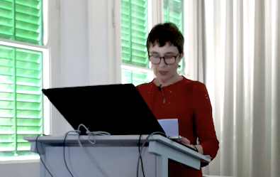

Activitats i xerrades
Tallers, grups i espais de reflexió per a famílies, professionals i persones interessades.
Espai de suport davant l’emergència climàtica
Espai per compartir les emocions que genera la problemàtica del canvi climàtic (ecoansietat), elaborar-les conjuntament i afavorir processos de consciència i acció transformadora.

Xerrades i tallers per a pares i educadors

Temes d'interès
- Què és l'autoestima? I els vincles segurs?
- La necessitat de límits i com aplicar-los
- La importància de la comunicació emocional entre pares i fills
- Entendre els adolescents per acompanyar-los millor
- El cos i l'afecte dins la família: fomentar una sexualitat saludable
- Transmetre hàbits i valors als fills i filles
- Créixer entre pantalles: desenvolupament saludable a l'era digital
- Mindfulness per millorar la salut i la convivència familiar
Assessorament a cuidadors i professionals de l’ajuda
Espai de supervisió i suport orientat a l'autocura de professionals i persones que treballen en relació d'ajuda.
Contacte
BarcelonaC/ Casanova 46, 4rt 1a
Mb: 696 453 277
Email: trescoca@gmail.com Sant Just Desvern
Mb: 696 453 277
Email: trescoca@gmail.com